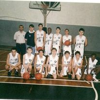

Nasci e fui criado na Zona Sul do Rio de Janeiro, em uma familia composta por um pai e uma mãe engenheiros.
Possuo uma irmã 8 anos mais velha e um irmão 5 anos mais velho e na minha infancia minha vida era escola, clube e casa.
Tive uma infancia "feliz" onde praticava varios esportes diferentes mas não era bom atleta em nenhum.
No inicio da minha adolecencia conheci o basquete
Então minha vida mudou completamente.
Fui federado pelo Botafogo e nesse momento minha vida passou a ser voltada para o basquete
Com 17 anos fui convocado para seleção Brasileira e tive oportunidade de me profissionalizar.
Com 21 anos entendi as minhas limitações e resolvi voltar para a faculdade e comecei a minha carreira profissional.
Hoje, depois de 12 anos, ter morado em 4 paises diferentes e ter trabalhado em muitos lugares, estou recomeçando minha vida assim com fiz quando parei de jogar basquete.
Hoje não consigo nem jogar nem acompanhar o basquete como eu gostaria mas ainda me manetenho informado NBA.